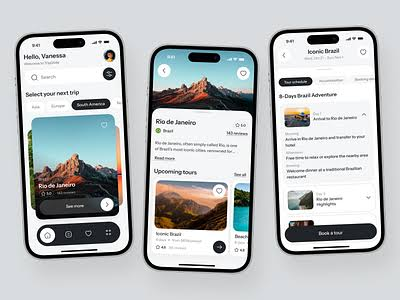
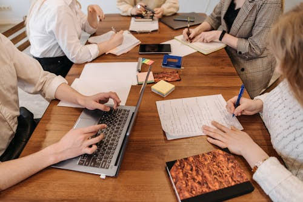

Projects

Personal Portfolio
A responsive personal website showcasing my skills, projects, and a dynamic resume. Built with HTML, CSS, and JavaScript.
Restaurant Booking App
Features food menus with images, quantity selectors, total cost calculation, booking confirmation, and payment integration.
ERT Survey at Dodoma
Conducted an Electrical Resistivity Tomography (ERT) survey to analyze subsurface conditions using 5m electrode spacing.

